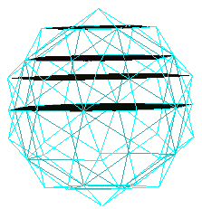
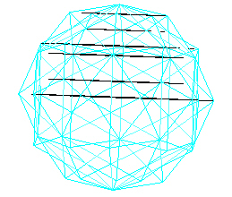

After building a model of the 120 Polyhedron, I noticed that there seemed to be an order to the vertices. They appear to define planes passing through the model. So I have investigated the 3 vertex orientations of the 120 Polyhedron and have compiled the following information on these planes.
Some of this layering information is given in the article "What's in this polyhedron?"
The 120 Polyhedorn has 3 different vertex types. These can be defined by the radial distance of the vertex from the polyhedron's center of volume.
|
|
| 3 Vertex types of the 120 Polyhedron. |
First consider the planes defined by the 120 Polyhedron's vertices perpendicular to an axis running through the polyhedorn and through vertices of type "A".
|  |
| Type A Layers in 120 Polyhedron. |
The above image only shows the layers in the top half of the polyhedron. The bottom half will have the same layering, but in reverse ordering.
There are a total of 9 layers. (We count the 2 planes passing through the 2 "A" type vertices. These "A" vertices define the axis to which the planes are all perpendicular.)

|
| Type A layer spacing. |
The sequence of the layer spacing is:
This particular layer spacing leads to some very interesting angle relations as explained in "What's in this polyhedron?"
Looking down along the type A axis, the planes defined by the vertices are shown in the following illustration.
| Type A layer shapes. |
Next consider the Type B vertices of the 120 Polyhedron. We use 2 opposite vertices to define the axis, and look at how the vertices now define planes perpendicular to the axis.
|  |
| Type B layers. |
Again, counting the planes passing through the two vertices used to define the axis, there are now 13 planes.
The spacing of the planes are given in the next illustration.
| Type B layers. |
Where A=p/sqrt(p+2), B=1/sqrt(p+2), C=A+B=(p+1)/sqrt(p+2).
If we scaled everything by a factor of sqrt(p+2), then the sequence of the layer spacing becomes:
If we imagine an additional layer, the sequence could be made to be
Looking along the axis we see that the vertices define pentagons at each layer except for the center layer which is a decagon (10 sides).

|
| Type B layer shapes. |
Next consider the Type C vertices of the 120 Polyhedron. We use 2 opposite "C" type vertices to define the axis, and look at how the vertices now define planes perpendicular to the axis.
| Type C layers. |
Again, counting the planes passing through the two vertices used to define the axis, there are now 17 planes.
The spacing of the planes are given in the next illustration.
| Type C layers. |
Where A=p/sqrt(3), B=1/sqrt(3), C=1/(p sqrt(3)), D=2/sqrt(3).
If we scale everything by a factor of (p sqrt(3)), we have the following layer sequence.
If we imagine introducing additional planes, we could make this sequence to be
Looking down along the axis, we see triangles and truncated triangles.
| Type C layer shapes. |
I do not know if there is any "meaning" or application for this information, particularly when we have to introduce new planes to obtain "nice", plane separation sequences.
For the moment, this is all just curious relations which may mean nothing....
Here is an image looking through an A vertex type at the center/middle plane.
| "A" Vertex Middle Plane. |
| "A" Vertex Middle Plane. |
| "A" Vertex Middle Plane. |
Here is an image looking through a "B" type vertex at its center/middle layer.
| "B" Vertex Middle Plane. |
And here are some images looking through a "C" type vertex at the center/middle layer.
| "C" Vertex Middle Plane. |
| "C" Vertex Middle Plane. |